|
|
Host Plant
The success and economics of silkworm rearing to a
large extent is governed by the quality and productivity of mulberry leaf fed
to the worms. Mulberry
silkworm is a monophagous insect and feeds only on mulberry (Morus sp) leaf. Mulberry, though a perennial tree species, is cultivated as a low
bush for commercial purpose under
tropical conditions while under temperate conditions it is cultivated as a dwarf tree.
|
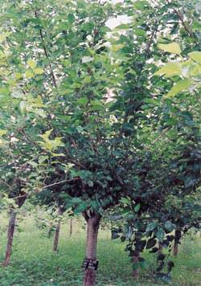
|
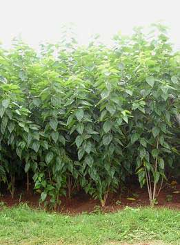
|
|
Tree Type (Temperate areas)
|
Bush Type (Tropical areas)
|
Mulberry is an arboreal plant and in nature and its origin is considered as temperate.
Still large sized trees can be seen growing in the Himalayan region of the country.
However, tree mulberry is also common in drier areas like Rajasthan,
indicating its wide adoptability under diverse agro-ecological
situations. Trees found in different
areas belong to different species (M. alba, M. serrata, M. laevigata
and M. indica).
|
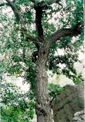
|
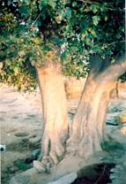
|
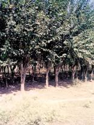
|
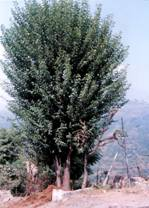
|
However, for commercial exploitation, it is cultivated
either as low bush or middling.
Mulberry Germplasm conservation & maintenance
In India, mulberry grows in a diverse
ecological situations. For effective
utilization of the mulberry resource
for mulberry varietal improvement programmes, the mulberry accessions from different areas are being
maintained at Central Sericultural Germplasm Resource Center (CSGRC), Hosur. The Center is
recognized by NBPGR, New Delhi as National Active Germplasm Site
for mulberry. The Center undertakes exploration, conservation and maintenance
of the mulberry germplasm together with characterization and evaluation of
the mulberry genetic resources. So far 1023 mulberry accessions (Exotic- 262,
Endemic – 761) have been collected from different eco-geographical zones and
maintained in the ex-situ field
gene bank. The gene bank represents 26 countries (21 Indian staes) and 13
species.
Of late, the
Center has taken up conservation of the mulberry genetic resources adopting
complimentary conservation methods
such as in vitro and
cryopreservation techniques in addition to the field gene bank. A total of 52
mulbewrry accessions representing different mulberry species (M. indica,
M. alba, M. rotundiloba, M. multicaulis, M. bombycis, M. cathyana, M. nigra and
M. laevigata) have been
conserved in vitro using both short term and medium term conservation
methods in the in vitro gene bank at both CSGRC, Hosur and NBPGR, New Delhi.
Similarly, using dehydration and slow freezing cryopreservation
protocols, winter dormant buds of 50 mulberry accessions have been cryopreserved in liquid nitrogen
(-196 ° C).
|
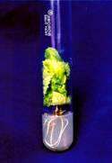
|
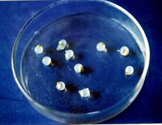
|
|
Mulberry
Varieties and cultivation
With the establishment of different institutes of the Central Silk
Board, and to improve the field productivity,
emphasis was made on development of suitable mulberry genotypes
with high leaf yield of good
nutritive quality. Due to continuous efforts of the breeders adopting various
techniques of breeding,
region-specific mulberry
varieties have been developed (Table-2), which lead to quantum jump
in mulberry leaf productivity in all
mulberry growing areas of the country.
Table-2: Mulberry varieties recommended for different
regions of the country
|
Mulberry
varieties
|
Regions
recommended
|
Yield
potentials (MT/ha/yr)
|
|
Kanva-2, S-36, S-54, Viswa, V-1, RFS-175
|
Southern Tropics, Irrigated
|
35 - 60
|
|
S-13, S-34,
MR.-2
|
Southern
Tropics, rainfed
|
10-12
|
|
TR-4, S-1 (Mandalaya),
BC 2-59, S-776, S-799,
S-1635
|
Eastern & NE, irrigated plains & foot
hills
|
20 - 30
|
|
TR-10, Assam Bola
|
Eastern & NE, rainfed, hills
|
19
|
Under southern tropics, which
contribute to the lion’s share of the country’s silk production, release of
the improved varieties for irrigated conditions, the field productivity could be increased from a low figure of
about 20 MT/ha/yr for variety Local to
about 60 MT for V-1.
Similarly, under rainfed conditions of the southern
tropics, introduction of varieties like S-13
S-34 and AR-10, about 4 fold improvement in productivity could be
achieved.
|
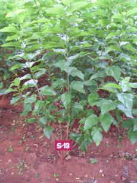
|
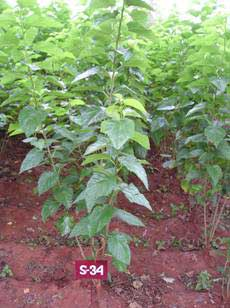
|
|
S-13
|
S-34
|
In addition to the above varieties, situation-specific varieties have also been released by CSR&TI,
Mysore, like variety K2 x Kosen for
cultivation under coconut shade and yields about 29 MT/ha/yr, variety AR-12 for cultivation
in the alkaline soils (pH 8.5 – 9.2, with electric conductivity of
0.32 to 0.84 mmho /cm) producing about 16 MT/ha/year of leaf.
|
|
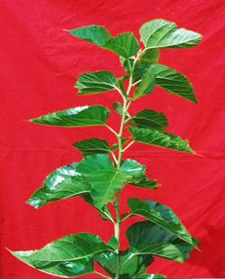
|
|
K2 X Kosen
|
AR-12
|
For low productive conditions (low irrigation and fertilizer
inputs) varieties RC-1 and RC-2 have been released which yield about 24
MT/ha/yr. The release of these varieties has made effective utilization of land resources and
also to improve the field productivity under varied agro-ecological conditions.
|
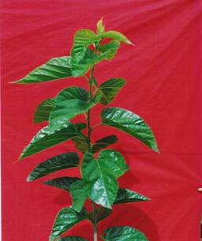
|
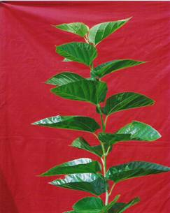
|
|
RC-1
|
RC-2
|
Besides improvement in productivity, significant improvement in leaf
quality was recorded as well. These
improved varieties, especially under southern tropics have proven highly suitable for bivoltine silkworm
rearing.
|
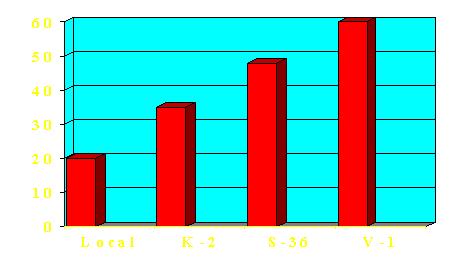
|
|
Effect of improved varieties on productivity under irrigated
conditions (Southern tropics)
|
|
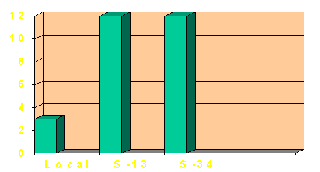
|
|
Effect of improved varieties on productivity under rainfed
conditions (Southern tropics)
|
Traditionally,
in tropical conditions and foot hills of Eastern – Northern regions of
country, mulberry as bush plantation was raised in closer spacing. However, for ensuring improved quality of
the leaf and for intensive cultivations, wider spaced plantation of 90 x 90 cm
or paired row (90+150) x 60 cm have
gained popularity. The newly
introduced paired row system of plantation holds promise for introduction of
mechanization in mulberry, thereby reducing the cost of leaf production and
maintaining timeliness of operations.
The power tiller / tractor
can be conveniently used for
performing intercultural operations. This process alone results in about 50 % reduction in cost of leaf
production.
|
|
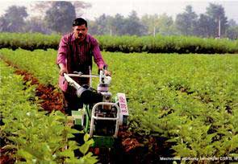
|
|
Mechanized
Cultivation in Mulberry
|
Manure
(20 MT FYM) and fertilizer dose of
350:140:140 NPK kg/ha per year have been found suitable for intensive bush
cultivation in tropical India to produce high
leaf yield (40-60 MT/ha/yr) of improved quality for rearing the silkworms, especially bivoltines.
Fertilizer doses for irrigated and rainfed mulberry have also been worked out for
different areas.
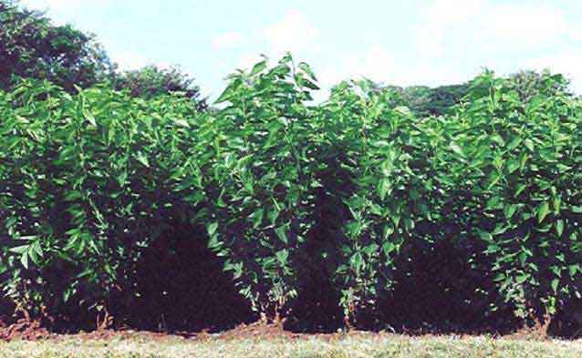
In
subsequent periods, to make mulberry cultivation more economically viable and
maintain the soil health besides yield levels, stress has been laid on
introduction of organic farming concept in mulberry cultivation on the lines
of Integrated Nutrient Management Systems (INMS). The major components of the
system include replacement of chemical fertilizers (50% of recommended)
through application of nitrogen fixing bacterial biofertilizers and
VA-Mycorrhiza along with application of compost and Vermicompost prepared out
of seri-farm residues and green manuring.
This has enabled to maintain the same yield levels as that recorded
due to application of full dose of
inorganic fertilizers besides minimizing the soil health hazards.
|
|
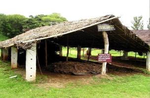
|
|
Green manuring in mulberry cultivation
|
Vermicomposting of seri-farm bye-products
|
To maintain the quality of leaf and to harvest the
potential yield of the varieties, irrigation is one of the major and crucial
inputs. Irrigation of about 85,000 gallons water per hectare per irrigation
through surface system has been found ideal not only to obtain high yield but
also to maintain the succulence of leaf, which is vital for successful
silkworm crop. In the present era of overall water shortage, Drip system of
irrigation has been established as
efficient system for mulberry which also ensures 40% water saving,
besides improving the leaf quality through increasing water use efficiency.
|
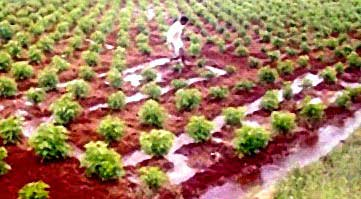
|
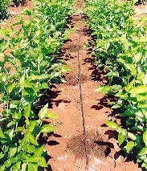
|
|
Ferrow Irrigation
|
Drip Irrigation
|
Back
|